ORTHOPAEDIC TRAUMA DIGEST
创伤骨科文献速览
第 002 期 · 2026-09-15
近 48 小时（9月13–14日）10 本创伤核心期刊新收录 23 篇（去重后本期精选 12 篇）
按部位分类：骨盆与髋部 2 · 脊柱 3 · 四肢与手部 3 · 创伤综合与救治体系 4 ｜ 含 1 篇老年骶骨骨折队列 · 1 篇脊髓损伤流行病学 · 2 篇运动相关损伤
编者按 EDITOR'S NOTE
本期覆盖 9 月 13–14 日，并向前延伸到近 48 小时窗口以补足篇数，10 本创伤骨科核心期刊共检出 23 篇，剔除上期已收录者后精选 12 篇。骨盆髋臼、脊柱创伤、四肢与手部损伤、创伤救治体系四条线均有值得一读的内容。
本期有一条与上期形成呼应的结论值得注意：复杂髋臼骨折（T型、双柱、前柱+后横断）的回顾性比较显示，单纯前路（改良 Stoppa）入路与前后联合入路在解剖复位率（50.0% vs 36.8%）、HHS 与 Majeed 评分上均无显著差异，联合入路仅输血量更多（中位 3 vs 2 单位）；且作者明确指出「决定结局的是复位质量而非手术策略（reduction quality, rather than surgical strategy, was associated with outcome）」。这与上期骨盆环骨折那篇「复位质量是唯一可干预因素」的结论高度一致——两篇独立研究指向同一件事。
另外两条临床实用性强的：老年骶骨 U 型骨折在 ≥65 岁骶骨骨折中占 28.9%，且无外伤机制、伤前可独立行走、合并腰椎退变者风险更高（OR 2.34 / 2.18 / 2.08）——这提示对老年患者「没有明确外伤史」的腰骶痛不能掉以轻心，必要时应做 CT 或 MRI；脊柱压缩骨折的职业康复研究显示，经皮椎体成形术后中位休假 62 天，而支具保守 144.5 天、后路融合 178 天，治疗策略是休假时长的独立因素，这对术前与患者讨论「多久能上班」很有参考价值。
▍骨盆与髋部 · 2 篇
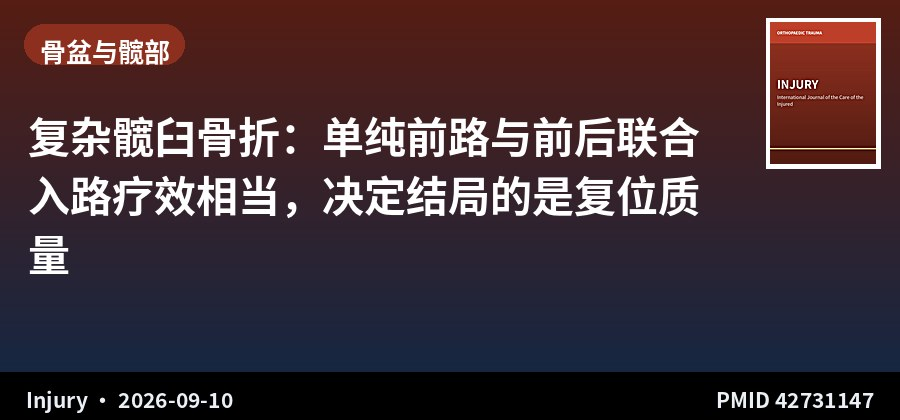
回顾性对照 · III级证据 · 31例
复杂髋臼骨折：单纯前路与前后联合入路疗效相当，决定结局的是复位质量
Comparison of anterior-only and combined anterior-posterior approaches for complex acetabular fractures
Injury · 2026-09-10 · 哈兰大学（土耳其） · PMID 42731147
一句话结论：31 例 T 型、双柱或前柱+后横断髋臼骨折，单纯前路（改良 Stoppa，12 例）与前后联合入路（19 例）的解剖复位率（50.0% vs 36.8%，p=0.710）、HHS（83.0 vs 81.0）与 Majeed 评分（76.0 vs 79.0）均无显著差异，联合入路输血量更多（中位 3 vs 2 单位，p=0.003）。
要点：采用术后 CT 评估复位质量（Matta 标准）。研究者明确结论：与结局相关的是复位质量而非手术策略——创伤后关节炎在复位良好者中发生率 7.7%，与术式选择无关。联合入路组输血更多反映了其更大的累计手术创伤。
对临床的启示：对选择性病例，单纯前路内骨盆固定即可完成后柱的复位与稳定，可避免额外的后方切口及其软组织并发症。这与上期骨盆环骨折的结论相互印证：与其在入路选择上纠结，不如把重点放在解剖复位上。注意样本量小（31 例）、两组非随机，前路组病例可能本身损伤更简单，存在选择偏倚，不宜据此完全放弃联合入路。
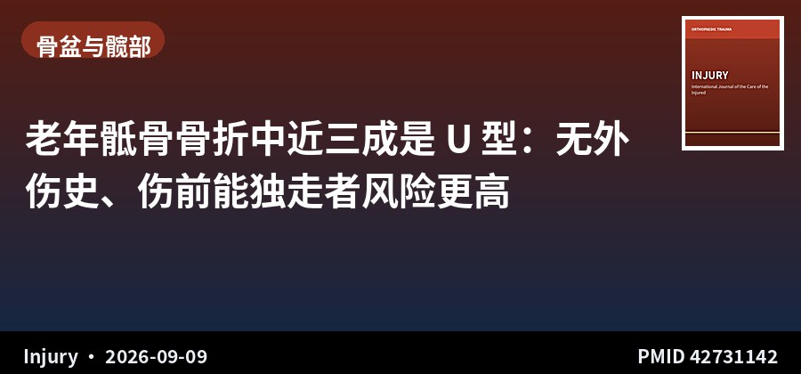
回顾性队列 · III级证据 · 263例
老年骶骨骨折中近三成是 U 型：无外伤史、伤前能独走者风险更高
Factors associated with U-type sacral fractures in geriatric patients: A retrospective cohort study
Injury · 2026-09-09 · 美国 2 家一级创伤中心 · PMID 42731142
一句话结论：263 例 ≥65 岁骶骨骨折患者中 76 例（28.9%）为 U 型骨折（双侧骶骨翼骨折+骶体横断，符合脊柱骨盆分离）；独立相关因素为腰椎退变/滑脱（OR 2.08）、伤前独立行走（以需助行器为参照，OR 2.18）、无外伤机制（以低能量损伤为参照，OR 2.34）。
要点：两家学术型一级创伤中心 2023–2025 年队列，均接受 CT 或 MRI 等高级影像检查。U 型定义为 AO/OTA 55C0、54C3。先做单因素 Logistic 回归，再以多因素回归确定独立关联。
对临床的启示：两条实用信息：一是老年骶骨骨折中 U 型占比接近三成，比例远高于既往印象，提示不能按「少见」对待；二是「伤前能独立行走」「没有明确外伤机制」反而与 U 型骨折相关，这看似反直觉，实际反映的是骨质疏松背景下低能量甚至无能量机制即可造成脊柱骨盆分离。对老年患者不明原因的腰骶痛、坐立困难，应提高警惕并考虑高级影像。回顾性设计，因果推断受限。
▍脊柱 · 3 篇
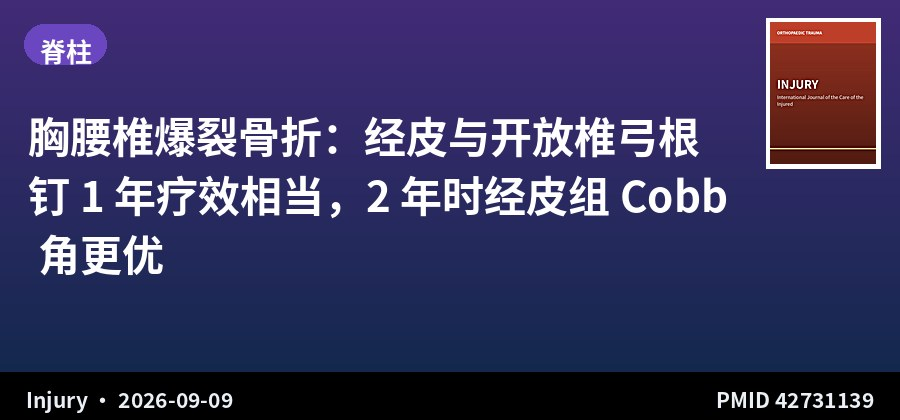
回顾性队列 · III级证据 · 54例 · 随访2年
胸腰椎爆裂骨折：经皮与开放椎弓根钉 1 年疗效相当，2 年时经皮组 Cobb 角更优
Longitudinal radiographic comparison of percutaneous and open pedicle screw fixation for thoracolumbar burst fractures: A two-year follow-up study
Injury · 2026-09-09 · 台湾多中心 · PMID 42731139
一句话结论：54 例胸腰椎爆裂骨折行短节段后路固定，经皮组（29 例）术中出血显著少于开放组（61.9±34.8 vs 262.7±205.1 mL，P<0.001）；术后 1 年内两组 Cobb 角无显著差异，但 2 年时经皮组 Cobb 角显著更小（6.7° vs 更高）。
要点：比较手术时间、术中出血、术后住院日与翻修手术，于术前及术后 3 个月、6 个月、1 年、2 年进行系列影像评估。两组基线人口学与术前影像参数可比。主要影像终点为 Cobb 角，次要终点包括腰椎前凸角。
对临床的启示：经皮固定的优势不只是围手术期（出血量差距达 4 倍），在 2 年随访中还体现出更好的矢状面维持，可能与其对后方韧带复合体与肌肉组织的保护有关。对有神经功能、需减压的爆裂骨折，开放入路仍不可替代；对无神经损伤、以后路稳定为主者，经皮技术值得优先考虑。样本量偏小，且 2 年时的差异需更大样本验证。
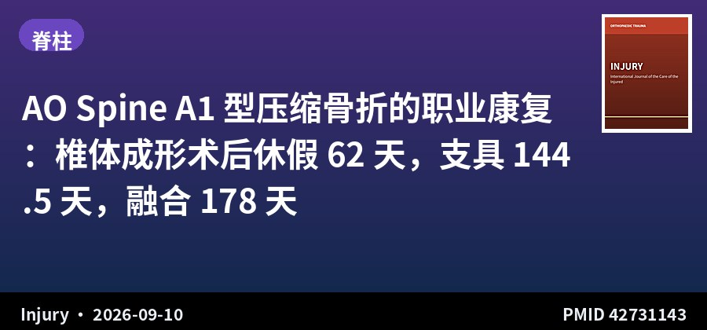
回顾性队列 · III级证据 · 70例
AO Spine A1 型压缩骨折的职业康复：椎体成形术后休假 62 天，支具 144.5 天，融合 178 天
Occupational recovery after work-related AO Spine type A1 compression fractures: Association between treatment strategy and sick-leave duration
Injury · 2026-09-10 · 西班牙三级转诊中心 · PMID 42731143
一句话结论：70 例工伤 AO Spine A1 型胸腰椎压缩骨折（无神经缺损），中位休假时长：经皮椎体成形术 62 天（IQR 38–94）、支具保守 144.5 天（IQR 112–186）、后路融合 178 天（IQR 120–327），三组差异显著（p<0.001）；多因素分析中治疗策略仍是休假时长的独立相关因素。
要点：2007–2025 年三级转诊中心回顾性队列，纳入工伤、AO Spine A1 型、无神经功能缺损的成人。主要终点为休假时长（受伤至工作能力恢复的间隔），采用对数转换后多因素线性回归。相比椎体成形术，支具保守治疗者休假时长约为其 2.2 倍。
对临床的启示：「多久能回去上班」是工伤患者最关心的问题，这项研究给出了可直接引用的量化数据。对无神经损伤的 A1 型压缩骨折，若职业康复速度是核心诉求，椎体成形术在缩短休假方面有明显优势。要注意的是治疗指征本身可能带来混杂（融合组可能损伤更重），且不同国家工伤补偿政策对休假时长影响巨大，本地化解读需谨慎。
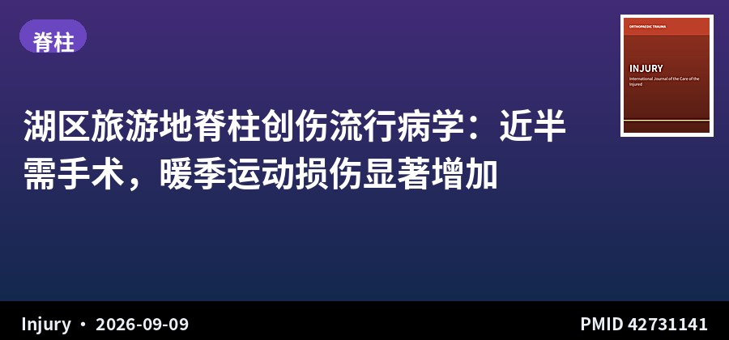
流行病学 · 单中心6年数据 · 132例
湖区旅游地脊柱创伤流行病学：近半需手术，暖季运动损伤显著增加
Traumatic spinal injuries in a rural tourist area: Epidemiology, seasonal trends and implications for healthcare resource allocation
Injury · 2026-09-09 · 科莫湖畔 Gravedona 医院（意大利） · PMID 42731141
一句话结论：132 例脊柱创伤患者平均年龄 60.0 岁，腰骶段占 37.1%、胸段 27.3%、颈段 23.5%、多节段 12.1%；45.5% 接受手术（其中 78.3% 为脊柱融合、21.7% 为椎体成形）；暖季脊柱创伤显著多于冷季（78 vs 54，p=0.04），主要由于运动损伤增加（22 vs 5）。
要点：2018–2024 年单中心急诊数据，聚焦椎体骨折。损伤机制：意外跌倒 56.8%、交通事故 21.2%、运动 20.4%、暴力 1.5%。54.5% 行保守治疗。研究背景是既往流行病学多忽略地域差异，旅游与乡村地区数据缺乏。
对临床的启示：对旅游地区医疗机构有资源规划价值：暖季脊柱创伤负荷显著上升且以运动损伤为主，可在旺季前预置脊柱外科力量与影像资源。对临床医生则提示在旅游区接诊跌倒老年患者时，需结合季节与活动方式判断损伤概率。单中心回顾性研究，外推需考虑地域特点。
▍四肢与手部 · 3 篇
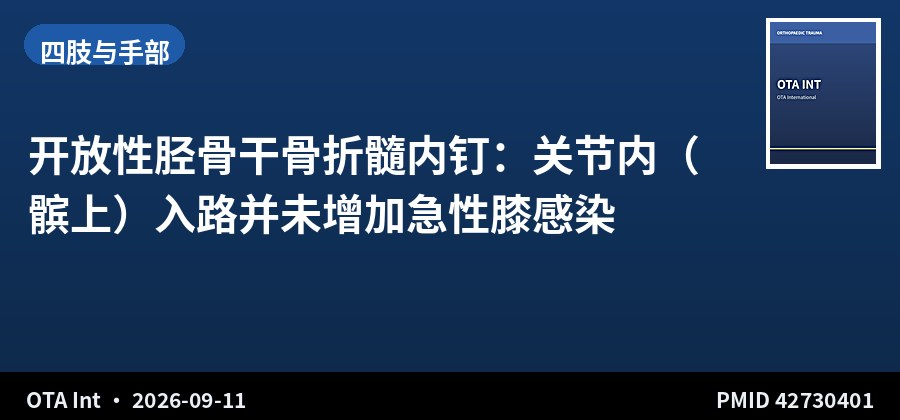
回顾性队列 · III级证据 · 293例
开放性胫骨干骨折髓内钉：关节内（髌上）入路并未增加急性膝感染
Acute knee sepsis after intramedullary nailing of open tibial shaft fractures: a comparison of intra-articular and extra-articular approaches
OTA Int · 2026-09-11 · 美国 2 家一级创伤中心 · PMID 42730401
一句话结论：293 例（295 处）开放性胫骨干骨折中，关节内（髌上）入路急性膝感染 1 例（1.1%），关节外入路 1 例（0.5%）；深部感染（8.9% vs 9.3%，P>0.999）与无菌性骨不连（8% vs 7%，P>0.999）两组亦无差异。
要点：2010–2023 年两家学术型一级创伤中心成人病例，随访≥3 个月。关节内入路 90 处、关节外入路 205 处（含髌旁内侧、经腱、髌旁外侧）。两组在损伤能量、Gustilo-Anderson 分型、外固定架使用率上均无差异。总体急性膝感染率仅 0.7%。
对临床的启示：髌上入路因更接近膝关节腔，一直存在「是否增加膝感染风险」的顾虑，这项对比研究给出了否定答案：在开放性胫骨骨折这一高感染风险人群中，两种入路感染率相当。对近端胫骨骨折、髌上入路在复位与置钉角度上更有优势，可不必因感染顾虑而回避。回顾性设计，事件数少（各 1 例），统计效能有限。
原文：doi.org/10.1097/OI9.0000000000000516
📷 原文图片（共 1 张 · 左右滑动查看）
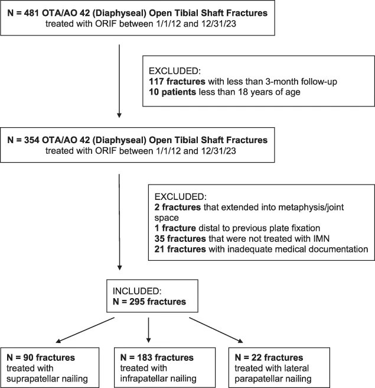
图片来源：原文开放全文（PubMed Central），版权归原出版方
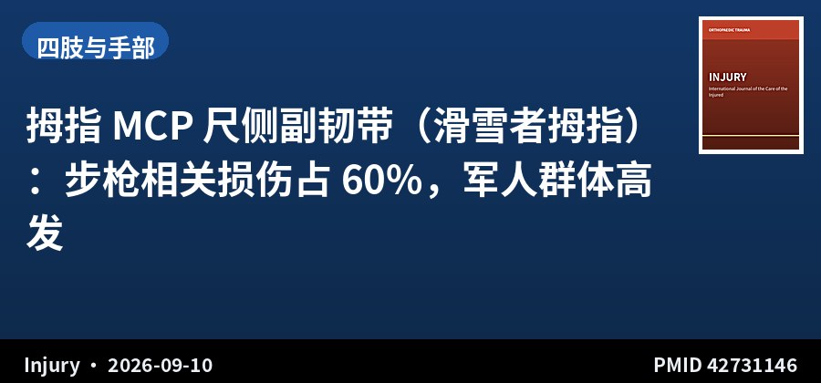
回顾性队列 · IV级证据 · 35例军人
拇指 MCP 尺侧副韧带（滑雪者拇指）：步枪相关损伤占 60%，军人群体高发
Return to duty after suture anchor repair of thumb metacarpophalangeal ulnar collateral ligament injuries in active duty soldiers
Injury · 2026-09-10 · 韩国国军医院 · PMID 42731146
一句话结论：35 例现役军人缝合锚钉修复拇指 MCP 尺侧副韧带，平均随访 12.0 个月，末次随访 VAS 0.5、QuickDASH 4.2、Kapandji 对指评分 9.1，全部病例出现坚实终点；步枪相关损伤占 60.0%，为最常见机制，Stener 损伤 51.4%。
要点：2022–2025 年军队转诊医院，排除需克氏针固定的撕脱骨折与需韧带重建的慢性损伤。分析人口学、损伤机制、Stener 损伤、临床结局、重返岗位状态与术后并发症。手术均采用缝合锚钉技术。
对临床的启示：这项研究提醒我们：拇指尺侧副韧带的损伤不是「滑雪者专属」，在需要反复持握、装填动作的职业人群（军人、射击运动员）中同样高发，且步枪操作是明确机制——这对职业相关损伤的问诊与预防宣教有参考意义。缝合锚钉修复在本组功能结果优秀，Stener 损伤比例过半提示手术指征应放宽。样本量小、无对照组。
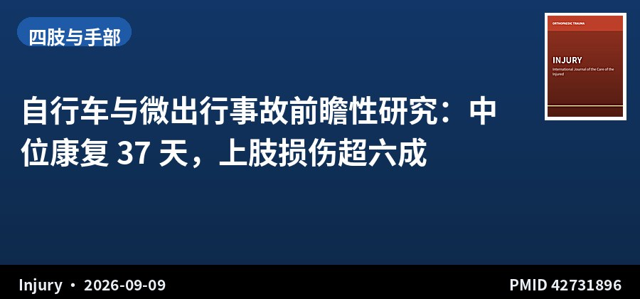
前瞻性队列 · III级证据 · 317例 · 随访12月
自行车与微出行事故前瞻性研究：中位康复 37 天，上肢损伤超六成
Clinical and patient-reported outcomes for bicycle and micro-mobility accidents: A prospective study with 12-month injury follow-up
Injury · 2026-09-09 · 奥斯陆大学医院等（挪威） · PMID 42731896
一句话结论：317 例自行车与微出行事故伤者（平均 37 岁，39% 女性），中位康复时间 37 天（IQR 14–61），仅 11 例（3%）12 个月时仍未完全康复；上肢 AIS 损伤占 60% 以上，78% 佩戴头盔，25% 骑电动车，75% 事故未涉及其他道路使用者。
要点：挪威 Agder 郡 2022 年 6 月–2023 年 9 月前瞻性登记，通过二维码问卷收集伤前 EQ-5D-5L，伤后 5 天内电话随访并采集临床数据，于 3、6、12 个月随访 EQ-5D-5L。采用 AIS 评估损伤部位与严重度、NISS 评估整体严重度。中位 NISS 为 4，38% 有多发损伤。
对临床的启示：这是少见的前瞻性、带患者报告结局的微出行事故研究，为「骑车摔了到底多严重」提供了量化答案：多数人一个月余恢复，但上肢损伤是绝对主体——这对防护装备研发与临床评估重点都有指向意义。注意单车道事故占 75%，说明摔伤多为自身失衡而非被撞，头盔能防颅脑伤但对上肢无保护。仅限挪威单一地区，损伤谱外推需谨慎。
▍创伤综合与救治 · 4 篇
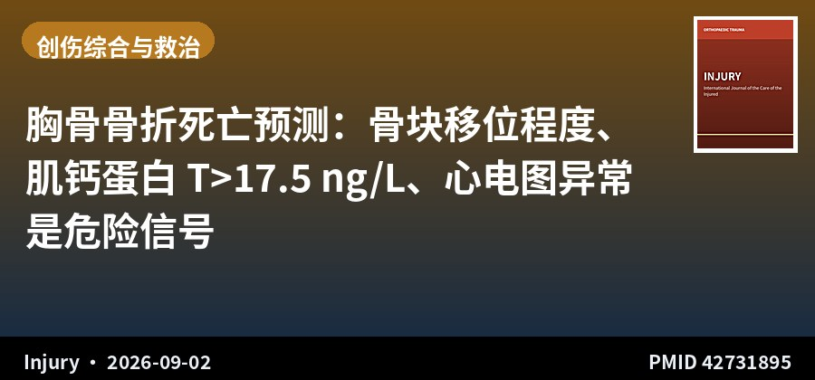
单中心审计 · III级证据 · 245例
胸骨骨折死亡预测：骨块移位程度、肌钙蛋白 T>17.5 ng/L、心电图异常是危险信号
Do ECG abnormalities, degree of sternal displacement or troponin level influence outcomes following sternal fracture?
Injury · 2026-09-02 · 英国单中心 · PMID 42731895
一句话结论：245 例胸骨骨折患者总体死亡率 9%；中度/完全移位者死亡率 36% vs 无/轻度移位 8%（p=0.022）；初始高敏肌钙蛋白 T >17.5 ng/L 者死亡率 20% vs 低水平者 2%；心电图异常者死亡率随异常程度升高，由正常窦性心律的 1% 升至传导异常的 33%（p=0.001）。
要点：回顾性提取科室临床审计数据，涵盖人口学、心电图改变、肌钙蛋白水平、胸骨骨折移位程度与结局。非存活者肌钙蛋白 T 变化值显著高于存活者（20.5 vs 1.0 ng/L，p<0.001）。
对临床的启示：胸骨骨折常被当作「良性」损伤处理，这项研究给出了实用的风险分层工具：移位明显者、肌钙蛋白升高者、心电图异常者需要更积极的监护与评估。腹部/胸部创伤后合并胸骨骨折时，应常规查心电图与肌钙蛋白，并结合移位程度决定是否收治观察。单中心回顾性研究，17.5 ng/L 为事后分析得出的界值，需外部验证。
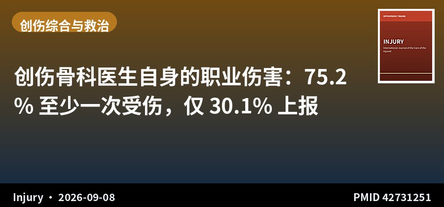
横断面调查 · 1118人发放 · 137份回复
创伤骨科医生自身的职业伤害：75.2% 至少一次受伤，仅 30.1% 上报
Occupational injuries among orthopaedic surgeons in Greece: A cross-sectional study
Injury · 2026-09-08 · 希腊骨科与创伤学会（HAOST） · PMID 42731251
一句话结论：137 名骨科医生中 103 人（75.2%）报告至少一次职业伤害；急性锐器伤（97.1%）、心理情绪压力（89.3%）、肌骨疾患（79.6%）最为常见；手与腕部最常受累（72.8%）；仅 31 例（30.1%）正式上报，仅 12 人（11.7%）接受过人体工学培训。
要点：向 HAOST 1118 名会员发放自制网络问卷，回复率 12.2%。平均年龄 43.4 岁，男性占 82.6%。38 例（37.9%）需药物治疗，13 例（12.6%）因伤缺勤。女性为保护因素（p=0.042），运动医学专业损伤风险更低（p=0.021），创伤专业损伤比值更高（OR 3.75，p=0.114）。
对临床的启示：这项研究把镜头对准术者自身，数据值得科室自省：近八成骨科医生存在职业相关肌骨问题，而锐器伤上报率不足三分之一。对我国骨科同行有直接借鉴意义——建议科室推动锐器伤规范上报流程、引入人体工学培训与器械优化，并把颈肩腰与手部劳损纳入职业健康管理。回复率仅 12.2%，存在无应答偏倚，且为自我报告数据。
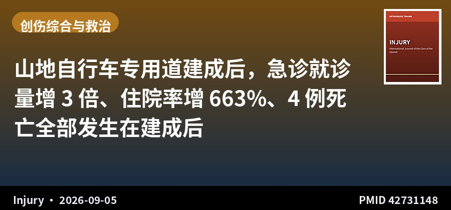
回顾性分析 · 15年数据 · 6643例
山地自行车专用道建成后，急诊就诊量增 3 倍、住院率增 663%、4 例死亡全部发生在建成后
Epidemiology of mountain bike-related injury presentations to emergency departments: A 15-year retrospective analysis
Injury · 2026-09-05 · 塔斯马尼亚大学（澳大利亚） · PMID 42731148
一句话结论：2010–2024 年共 6643 例山地自行车相关急诊就诊；2015 年专用道建成后患病率增至 3 倍（1.0→3.6/1000 急诊就诊），住院率增 663%（17.2→131.3 例/年），救护车到达增 372%，全部 4 例死亡均发生在专用道建成之后。
要点：基于塔斯马尼亚公立医院急诊病历的回顾性分析。亚急诊分级中，ATS 1 级（最紧急）增 375%、ATS 2 级增 1343%。损伤以骨科损伤为主（41.6%），软组织伤 27.5%，开放伤口 19.3%，多发性重大创伤 1.8%；上肢为最常受累部位（51.1%）。夏季负担最重。
对临床的启示：对运动医学与创伤骨科都有参考价值：运动基础设施的推广会带来可预测的损伤负荷上升，且重症比例增幅尤为突出。这提示在推广运动项目的同时需配套医疗资源规划与安全教育。对临床医生而言，山地自行车损伤以上肢为主、夏季高发，接诊时应有针对性地评估上肢与颅脑损伤。回顾性病历数据，可能存在编码与漏诊偏倚。
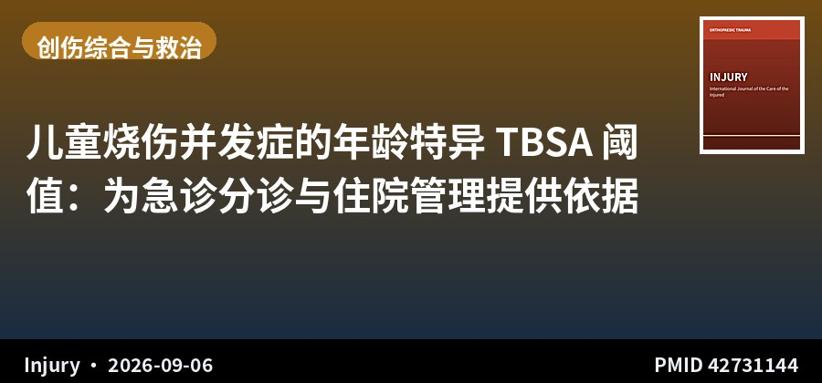
回顾性队列 · III级证据 · 942例儿童
儿童烧伤并发症的年龄特异 TBSA 阈值：为急诊分诊与住院管理提供依据
Age-specific TBSA thresholds for pediatric burn complications: A 13-year single-center inpatient retrospective cohort
Injury · 2026-09-06 · 以色列三级儿童中心 · PMID 42731144
一句话结论：942 例 0–18 岁急性烧伤患儿（平均年龄 4.6 岁，平均 TBSA 5.0%），发热 29.0%、ICU 转科 4.4%、手术 7.7%、感染 5.2%；研究按年龄×TBSA 估算绝对风险并推导出年龄特异 TBSA 阈值，其中对 ICU 转科的判别能力最强。
要点：2012 年 12 月–2025 年 5 月三级儿童中心住院队列。烫伤占 74.5%。延迟就诊（>24 h）与更多发热相关（p≈0.05）。手术风险因部位而异，下肢与臀部最高，环形烧伤更为常见。ICU 转科与手术很少在不伴发热的情况下发生。
对临床的启示：儿童烧伤的分诊长期缺乏量化标准，这项研究提供了按年龄分层的 TBSA 阈值与绝对风险表，对急诊与住院管理有直接实用价值。两条临床提示：延迟就诊者并发症更多，应加强家长宣教；「不发热」在儿童烧伤中是较强的低风险信号，可辅助判断是否需要升级监护。单中心回顾性研究，阈值需外部验证后使用。
关于本栏目：每日定时检索 Journal of Orthopaedic Trauma、Injury、JBJS (Am)、CORR、Bone & Joint Journal、Journal of Trauma and Acute Care Surgery、OTA International、European Journal of Orthopaedic Surgery & Traumatology、International Orthopaedics、Archives of Orthopaedic and Trauma Surgery 共 10 本创伤骨科核心期刊前一日新收录文献，按部位分类，AI 辅助生成中文精要。
声明：本内容由 AI 辅助整理，仅供学术交流参考，观点与数据请以原文为准，不构成诊疗建议。文献题录与摘要来源：PubMed。
— 创伤骨科文献速览 · 第 002 期 —